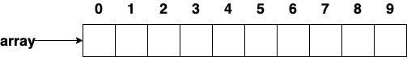
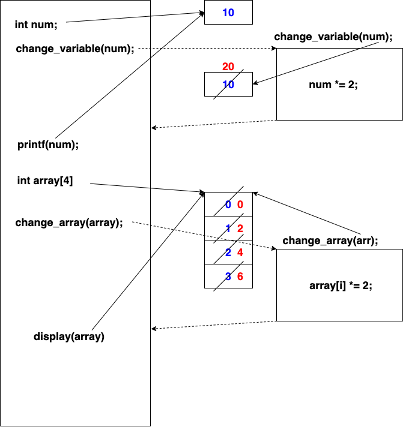

#include <stdio.h>
void display(int array [], int size)
{
for(int i = 0; i < size; i++)
printf("%10d", array[i]);
printf("\n");
}
int main()
{
// create array
int array[10];
printf("%p\n", array); // address of the first element
display(array, 10);
// initialize array
for(int i = 0; i < 10; i++)
array[i] = i;
display(array, 10);
return 0;
}

#include <stdio.h>
int main()
{
// create array
int array[10];
// initialize array
for(int i = 0; i < 10; i++)
array[i] = i;
printf("%d\n", array[10]);
return 0;
}
#include <stdio.h>
void display(int arr [], int size)
{
for(int i = 0; i < size; i++)
printf("%10d", arr[i]);
printf("\n");
}
void change_variable(num)
{
num *= 2;
printf("In change_variable function: %d\n", num);
}
void change_array(int arr [], int size)
{
for(int i = 0; i < size; i++)
arr[i] *= 2;
printf("In change_array function: \n");
display(arr, size);
}
int main()
{
// pass by value
int num = 10;
change_variable(num);
printf("In main function: %d\n", num);
// pass by reference
int array[4];
for(int i = 0; i < ; i++)
array[i] = i;
change_array(array, 4);
display(array, 4);
return 0;
}

// main.c
#include <stdlib.h>
#include <time.h>
int main()
{
srand(time(NULL));
int size = read_num();
int array[size];
assign(array, size);
display(array, size);
return 0;
}
// io.h int read_num(); void display(int array [], int size);
// io.c
// util.h int get_rand(); void assign(int array [], int size);
// util.c